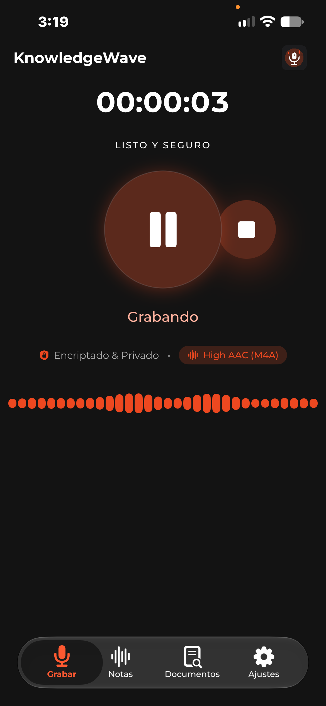
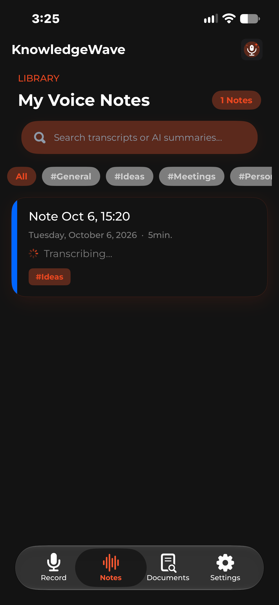
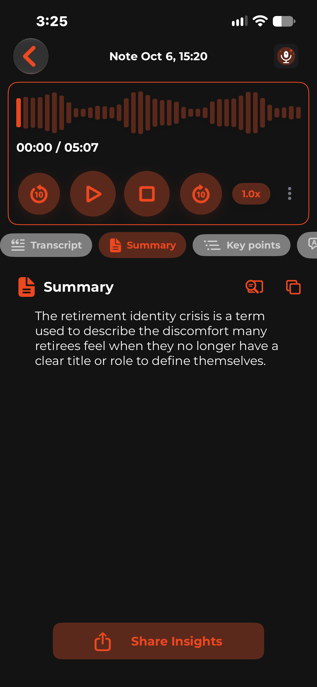
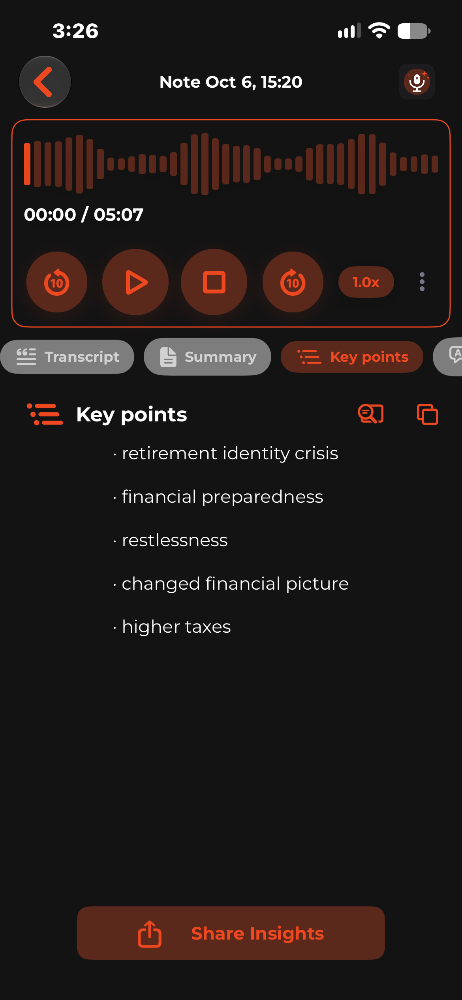
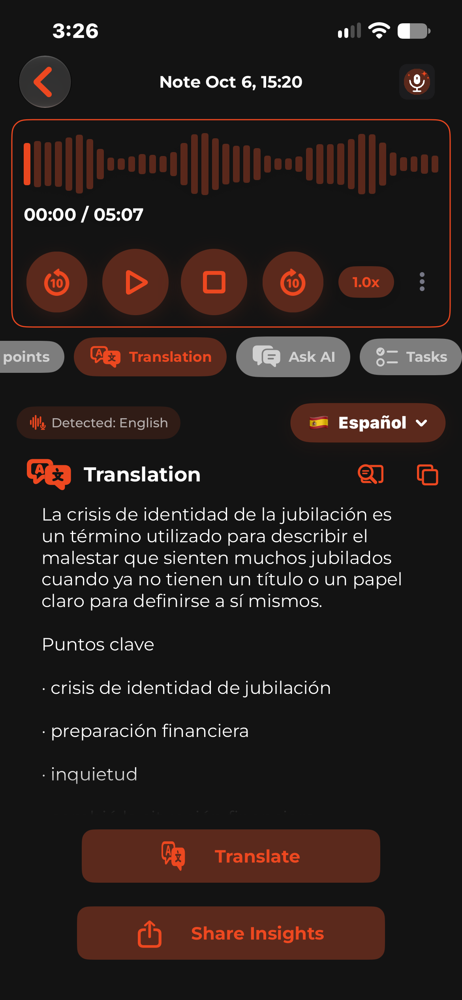
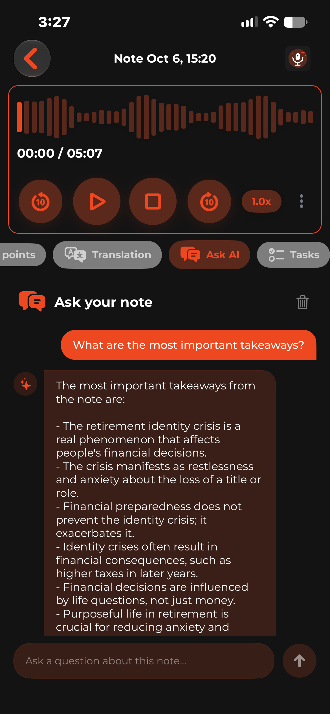
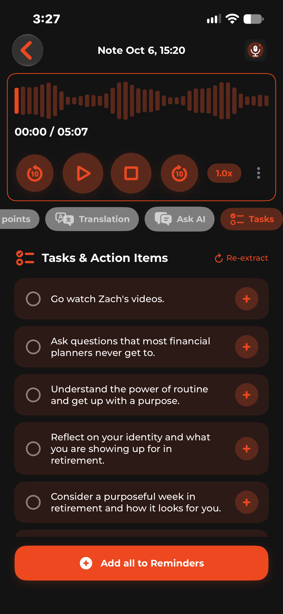
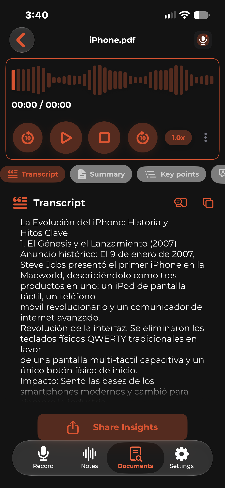

Tus reuniones, notas y lecturas con Inteligencia Artificial Local
KnowledgeWave graba, transcribe y analiza tus ideas y documentos directamente en tu iPhone. Sin servidores externos, sin suscripciones a la nube y con máxima confidencialidad.
Potencia de escritorio en tu bolsillo
Máxima velocidad de procesamiento, respuesta inmediata y bajo consumo de batería directamente en tu iPhone.
Transcripción de Audio a Texto sin Internet
Convierte horas de voz en texto con altísima precisión y en varios idiomas, funcionando al 100% sin conexión a internet.
Micrófono de AirPods y Auriculares Inalámbricos
Dicta con total libertad de manos libres mientras llevas tu iPhone en el bolsillo o en la mochila. KnowledgeWave detecta y usa automáticamente el micrófono de tus AirPods o auriculares inalámbricos, y cambia sin interrupciones si te los quitas.
Acceso Rápido desde tu Pantalla
Inicia o pausa notas de voz con un solo toque desde la pantalla de bloqueo o desde el Centro de Control de tu iPhone.
Resúmenes e Ideas Clave con Inteligencia Artificial
Genera resúmenes ejecutivos, extrae los puntos más importantes y obtén respuestas rápidas procesadas directamente en tu iPhone.
Centro de Documentos y Lectura Cómoda
Importa documentos PDF o Word. Extrae su texto, obtén resúmenes automáticos y léelos cómodamente como en un libro digital.
Escucha tus Notas Leídas en Voz Alta
Tu teléfono te lee tus notas con voz natural. Puedes acelerar la velocidad hasta 3 veces para repasar o estudiar mientras manejas o caminas.
Exportación a Recordatorios de Apple
La IA detecta compromisos y tareas pendientes en tus reuniones y te permite enviarlos a Apple Reminders con un solo toque.
Conversa con tus Notas
Hazle preguntas a tus grabaciones y documentos sobre acuerdos, cifras o dudas específicas con respuestas contextuales al instante.
Diseñado para quienes la privacidad no es negociable
Si manejas secretos de oficio, historiales clínicos o acuerdos comerciales, subir audios a servidores externos es un riesgo innecesario. KnowledgeWave mantiene todo en tu iPhone.
Abogados & Despachos
Secreto profesional garantizado. Graba declaraciones, analiza contratos y prepara audiencias sin que ningún audio toque servidores de terceros ni viole acuerdos de confidencialidad.
Médicos & Terapeutas
Consultas con pacientes y notas clínicas protegidas bajo privacidad absoluta. Cumple con la confidencialidad médica más estricta procesando todo directamente en tu propio iPhone, sin enviar audio a internet.
Periodistas & Creadores
Protección irrompible para tus fuentes. Graba entrevistas de horas enteras en modo avión, transcribe sin conexión y obtén resúmenes ejecutivos en cualquier lugar del mundo.
Ejecutivos & Juntas
Reuniones de estrategia, acuerdos y números clave. Analiza decisiones y crea tareas en tu lista de Recordatorios con inteligencia artificial local, sin pagar suscripciones mensuales.
Diseñado exclusivamente para iOS
Una experiencia rápida, elegante y diseñada para sentirse como en casa en tu iPhone.

Grabación Hi-Fi
Captura nítida con visualizador de ondas y cancelación de ruido.

Biblioteca Organizada
Búsqueda instantánea, categorías y estado de transcripción.
Transcripción Completa
Texto exacto sincronizado con controles de reproducción.

Resúmenes Ejecutivos
La esencia de tu reunión o clase sintetizada al instante.

Puntos Clave Estructurados
Ideas centrales ordenadas con viñetas claras.

Traducción Multilingüe
Detección inteligente y traducción local en el dispositivo.

Pregúntale a tu Nota
Chat interactivo con IA para aclarar dudas de tu contenido.

Extracción de Tareas
Detección de compromisos y envío directo a Recordatorios.

Document Hub
Importación, lectura y análisis de PDFs o documentos Word.
Sin cuotas mensuales. Sin trampas en la nube.
¿Cansado de pagar suscripciones mensuales de $15 o $20 USD por herramientas que además envían tus audios a servidores externos? En KnowledgeWave pagas una sola vez y la app es tuya de por vida.
KnowledgeWave Vitalicio
7 días de prueba completa incluidos
- ✓ Transcripción ilimitada con Whisper 100% Offline
- ✓ Resúmenes e Insights con IA local sin límites
- ✓ Document Hub: Lector y análisis de PDFs y Word
- ✓ Botón de Acción con pantalla apagada o bloqueada
- ✓ Micrófono automático de AirPods y Bluetooth
- ✓ Sincronización directa con Apple Reminders
- ✓ Cero servidores en la nube. Cero suscripciones
Apps Típicas en la Nube
El modelo abusivo de suscripción
- ✕ Cobros recurrentes mensuales de por vida
- ✕ Tus audios y conversaciones viajan a servidores ajenos
- ✕ Inutilizables sin conexión a internet o sin señal
- ✕ Límites estrictos de minutos o cobros sorpresa por uso extra
- ✕ Riesgo ético y legal de filtraciones de datos privados
Todo lo que necesitas saber
Claridad y transparencia absoluta sobre cómo protegemos tu privacidad.
Tus datos nunca salen de tu iPhone
A diferencia de otras aplicaciones que envían tus conversaciones a servidores en internet, KnowledgeWave procesa todo de forma 100% privada dentro de tu propio teléfono. Máxima confidencialidad garantizada.
Leer Política de Privacidad Completa →